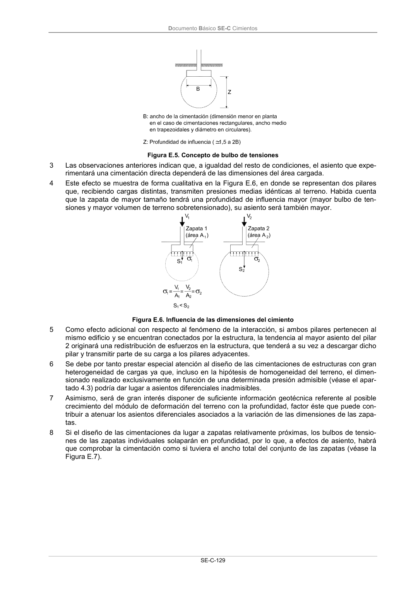

DB-SE-C · Página 134 · versión 2019-12-20
SHA256: a71133f4b0dca253e45ea3071c70f2a512354bcc5cd841bf89b1a502f567ac5e · página física 134 de 165 · métodos de encabezado
solo si están cotejados.
Documento · ← p. 133 · p. 135 →
Formatos: Markdown · JSON de bloques · PDF p. 134 · imagen PNG
Documento Básico SE-C Cimientos SE-C-129 Figura E.5. Concepto de bulbo de tensiones 3 Las observaciones anteriores indican que, a igualdad del resto de condiciones, el asiento que expe- rimentará una cimentación directa dependerá de las dimensiones del área cargada. 4 Este efecto se muestra de forma cualitativa en la Figura E.6, en donde se representan dos pilares que, recibiendo cargas distintas, transmiten presiones medias idénticas al terreno. Habida cuenta que la zapata de mayor tamaño tendrá una profundidad de influencia mayor (mayor bulbo de ten- siones y mayor volumen de terreno sobretensionado), su asiento será también mayor. Figura E.6. Influencia de las dimensiones del cimiento 5 Como efecto adicional con respecto al fenómeno de la interacción, si ambos pilares pertenecen al mismo edificio y se encuentran conectados por la estructura, la tendencia al mayor asiento del pilar 2 originará una redistribución de esfuerzos en la estructura, que tenderá a su vez a descargar dicho pilar y transmitir parte de su carga a los pilares adyacentes. 6 Se debe por tanto prestar especial atención al diseño de las cimentaciones de estructuras con gran heterogeneidad de cargas ya que, incluso en la hipótesis de homogeneidad del terreno, el dimen- sionado realizado exclusivamente en función de una determinada presión admisible (véase el apar- tado 4.3) podría dar lugar a asientos diferenciales inadmisibles. 7 Asimismo, será de gran interés disponer de suficiente información geotécnica referente al posible crecimiento del módulo de deformación del terreno con la profundidad, factor éste que puede con- tribuir a atenuar los asientos diferenciales asociados a la variación de las dimensiones de las zapa- tas. 8 Si el diseño de las cimentaciones da lugar a zapatas relativamente próximas, los bulbos de tensio- nes de las zapatas individuales solaparán en profundidad, por lo que, a efectos de asiento, habrá que comprobar la cimentación como si tuviera el ancho total del conjunto de las zapatas (véase la Figura E.7).
